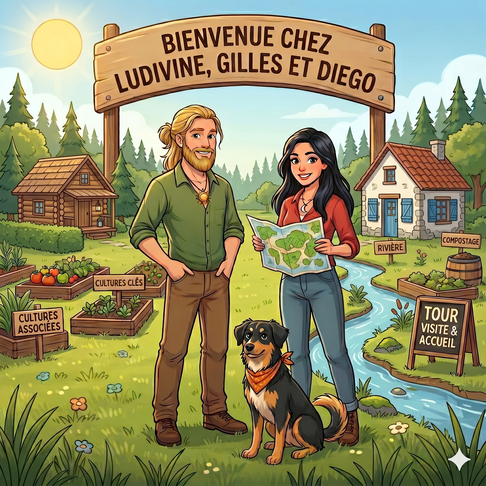
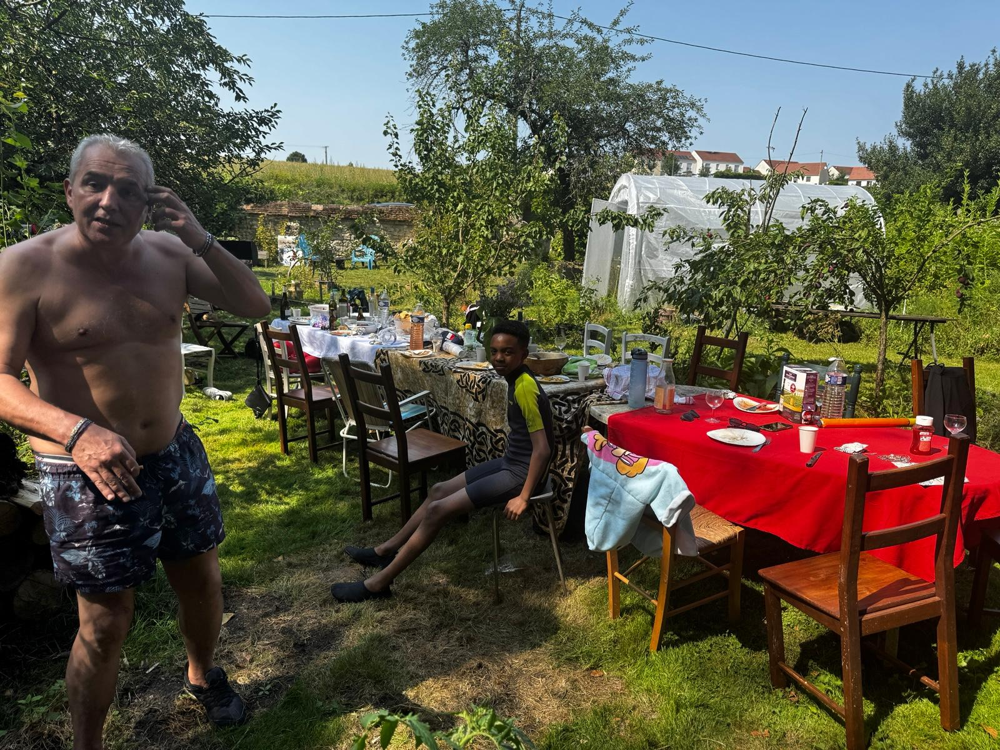
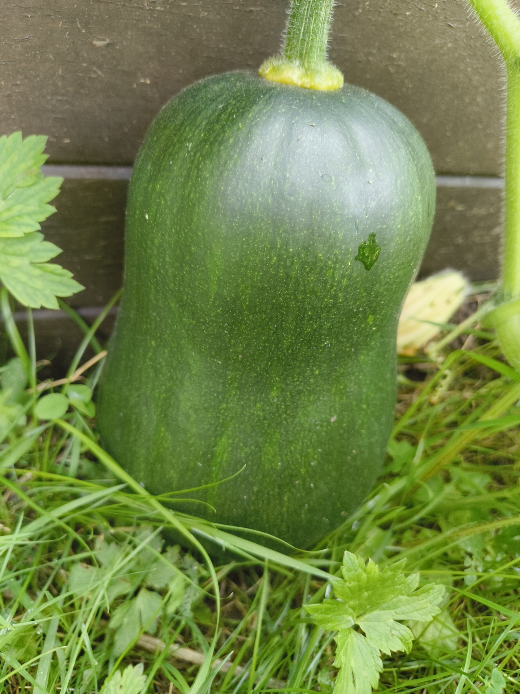
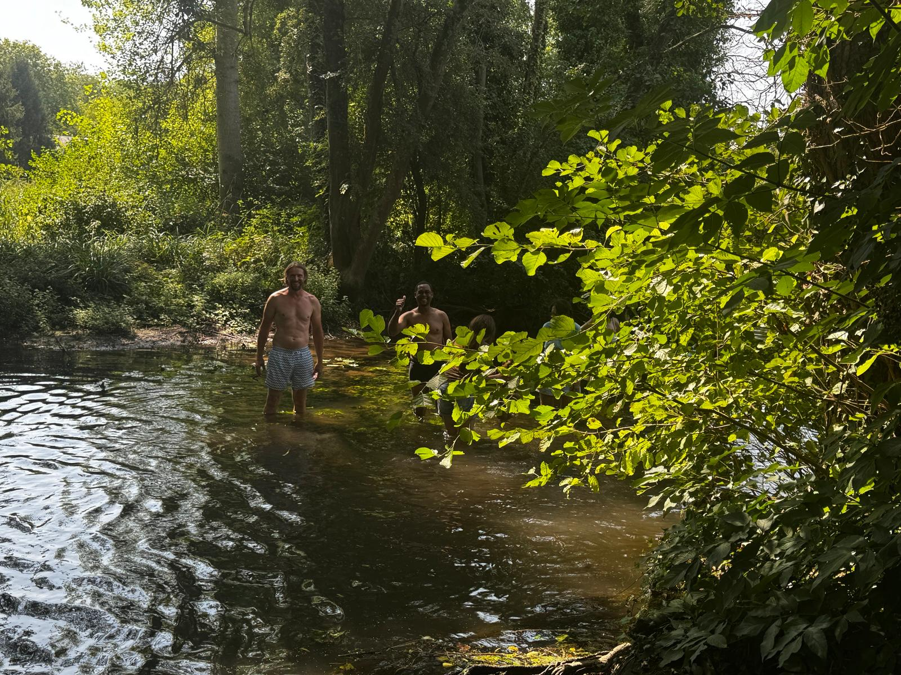
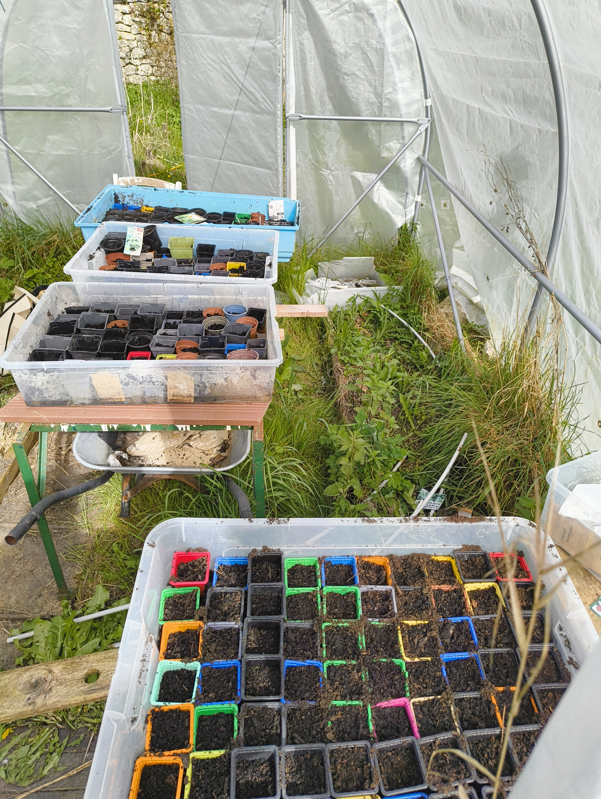
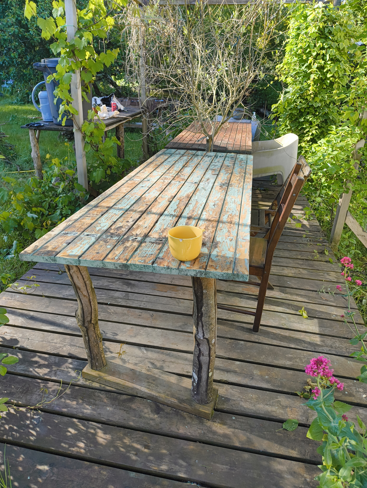
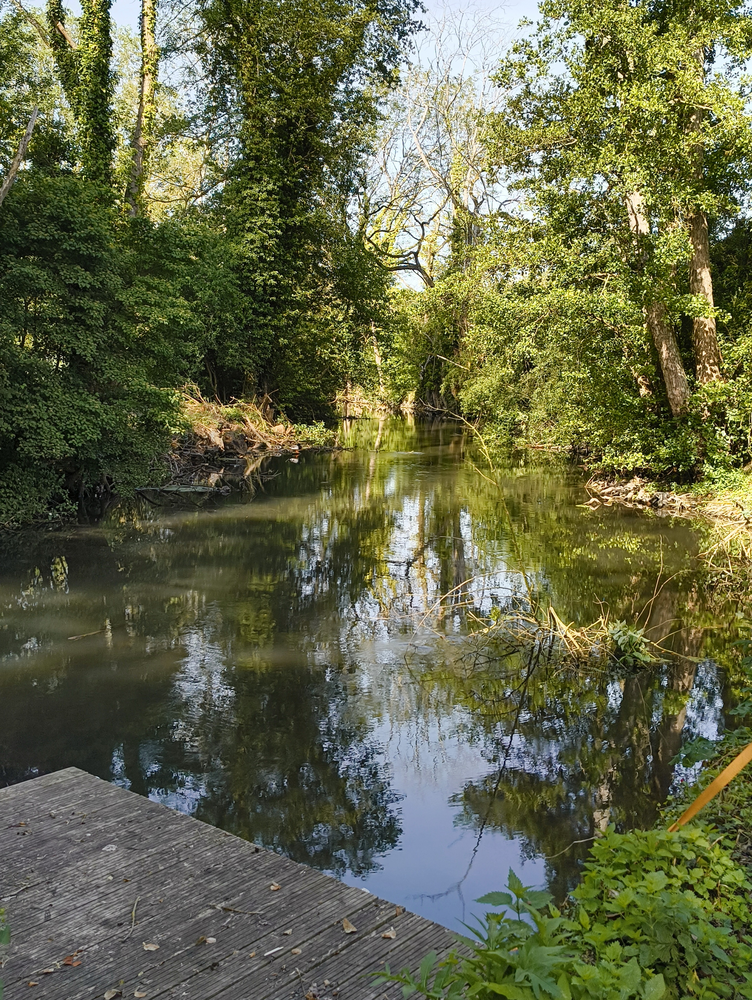

1
Le Cœur
Abri, cuisine, grandes tablées et vie commune. C'est le foyer des repas, des discussions et des coups de main spontanés.
Le Phare Numérique
Ludivine, Gilles et Diego vous invite à partager un moment nature pour ralentir, comtempler, jardiner, manger une tarte, ou boire une bière les pieds dans l'eau.
Vous êtes les bienvenus les copains lorsque le bouton "On est présent !" est vert, et si vous souhaitez passer une tête, n'hésitez pas. Si le bouton est marqué absent, on n'est pas là ! Regardez le calendrier pour savoir quand on sera présents, mais pour être sûrs, envoyez un petit message.
« C'était un bel endroit pour se réjouir la vue et l'esprit. La Cosme y faisait un grand coude tout ombragé de grands saules et de vieux trembles ; l'eau y courtise les herbes fines et s'y jette en bouillonnant sur des lits de cailloux blancs, avant de s'endormir dans les grands fonds où les carpes s'en vont cacher leurs œufs. Les oiseaux de rivière, les rousserolles et les siffleurs s'y donnaient rendez-vous, et on entendait le cri de la poule d'eau qui rappelait ses petits cachés sous les grandes feuilles des nénuphars. Tout y sentait la fraîcheur et la paix de la vie sauvage, loin des chemins et du tracas des hommes, là où la terre semble se reposer au bruit de l'eau claire. »

Le lieu fonctionne comme un petit archipel : chaque espace a son rythme, son usage et son énergie. On y circule doucement, selon la saison et les besoins.
Abri, cuisine, grandes tablées et vie commune. C'est le foyer des repas, des discussions et des coups de main spontanés.
Le chalet du repos, de la nuit et de la régénération. On y entre avec délicatesse, comme dans une respiration plus basse.
Campement estival, de juin à septembre, avec une grande tente et l'esprit des nuits dehors quand la saison le permet.
La fraîcheur des grands arbres et de la rivière, pour se poser à l'ombre et écouter le lieu respirer.
Calendrier des saisons
Indiquez votre venue grâce au calendrier. Quand les cases sont vertes, c'est que je suis là : vous pouvez choisir une date et laisser un petit mot avec l'heure approximative de passage.
L'Ardoise des Échanges
Le lieu vit par le don, l'entraide et l'attention. Cette ardoise peut changer au fil des saisons, des récoltes, des chantiers et des envies.
Ce qu'on fait ici
Selon la saison, la météo et l'humeur du moment, il y a toujours quelque chose à faire — ou à ne pas faire. Voici ce que le lieu invite à vivre.
Les Lois de la Clairière
La charte garde l'esprit du lieu lisible : chacun est bienvenu dans la mesure où sa présence respecte les hôtes, le vivant et le rythme commun.
On vient quand Gilles et Ludivine sont là, le phare allumé. Ce n'est pas un gîte, ni une appli — c'est une maison habitée, une forêt qui respire, une table où l'on pose les sacs sans compter les heures.
On marche doucement ici. On repart avec ses déchets, on ménage l'eau de la rivière, on laisse les zones d'ombre à ceux qui en ont besoin — les bêtes, les plantes, le silence. Chaque passage laisse l'endroit un peu plus intact qu'à l'arrivée.
Pas de ticket, pas d'ardoise, pas de consommation minimum. On partage ce qu'on a — une recette, un coup de main, une chanson. On demande avant d'amener du monde. La générosité n'est pas un business model.
L'Œil du Phare
Des images du verger, des tablées, des saisons et des présences. Un aperçu de ce que l'on trouve ici quand on prend le temps.



.jpg)



Venir jusqu'ici
Château-Landon est à environ 90 km au sud de Paris, dans le Gâtinais (Seine-et-Marne). Un détour qui vaut le voyage.
Les Environs
Le Gâtinais regorge de beaux endroits à deux coups de pédale ou de volant. Voici quelques escales pour prolonger la balade.
La Boîte à Graines
Le site est en construction, il va évoluer dans les prochains jours.